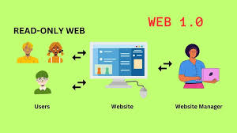

Web 1.0 refers to the first generation of the World Wide Web, spanning roughly from 1991 to 2004. It was characterized by static, read-only web pages where users could only consume content but had no ability to interact with or contribute to it.
Web 1.0 websites were built using basic HTML and stored as fixed files on web servers. Every visitor to a page saw exactly the same content with no personalization or interaction. There were no comment sections, no user accounts, and no dynamic content. Websites were essentially digital brochures — created by a small number of people and read by many. Updating a page required manually editing the HTML file and re-uploading it to the server.
Web 1.0 laid the foundation for everything the modern web has become. It proved that the Internet could be used to share information globally in a structured, accessible way. While limited compared to today's standards, it was a revolutionary step that connected people to information on a scale never seen before and set the stage for the interactive web that followed.